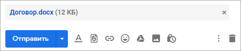

Как отправить файл по почте
В этом уроке я покажу, как отправить файл по электронной почте. Мы научимся пересылать документы, фотографии и другие данные через Майл, Яндекс и Gmail.
Данные, которые пересылают по интернету, называются вложениями или прикрепленными файлами (аттачментами).
Как добавить файл к письму
Технология пересылки файлов по почте следующая:
- Заходим в свой ящик в интернете. Делается это через почтовый сайт, на котором находится адрес: Майл (mail.ru), Яндекс (yandex.ru), Google (gmail.com) или другой.
- Нажимаем на «Написать письмо».
- Заполняем форму: указываем email получателя, тему и, если необходимо, печатаем сообщение.
- Щелкаем по специальной кнопке для добавления вложения. Откроется окно выбора данных с компьютера. Добавляем через него файл.
- Нажимаем на «Отправить».
После этого сообщение с вложением уходит по указанному адресу. В ящике остается копия – она попадаем в папку «Отправленные».
При быстром интернете пересылка занимает несколько секунд.
Пример
1. Сначала нужно зайти в ящик. Для этого открыть сайт, на котором он находится, ввести логин и пароль.
Подробнее об этом читайте в уроке Моя электронная почта.
2. Затем нажать на кнопку для составления письма. Вот как она выглядит в разных сервисах:
Яндекс.Почта
Mail.ru

Gmail.com
3. Далее заполнить форму:
- Напечатать адрес получателя
- Указать тему письма.
- Набрать сообщение (если нужно).

4. Для загрузки файла щелкнуть на специальную кнопку. Обычно она находится вверху или внизу - над или под частью для ввода текста.
Яндекс.Почта
Mail.ru
Gmail.com
Появляется небольшое окошко для выбора данных с компьютера. Через него нужно выбрать объект для пересылки.
Допустим, мне необходимо выбрать документ, который находится в Локальном диске D в папке «Договоры». Значит, в окошке перехожу в Локальный диск D.
И открываю «Договоры».
Показываются файлы, которые есть в этой папке. Нахожу среди них нужный и щелкаю по нему два раза левой кнопкой мыши.
Окошко исчезает, а мой документ появляется на странице.
в Яндекс.Почте:
в Mail.ru:
в Gmail.com:
Если файл большого размера (от 1 МБ), он будет какое-то время закачиваться. В случае с объемными данными (от 35 МБ) загрузка будет происходить сразу на облако.
5. Когда вложение загружено, нужно нажать на «Отправить».
Сразу после этого сообщение с вложением уйдет по указанному адресу. Вот как его увидит получатель:
Обратите внимание на иконку с изображением скрепки в конце. Таким образом сервис показывает, что внутри есть аттачмент.
Открыв письмо, получатель увидит и текст, и документ, которой сможет посмотреть или скачать на свой компьютер.
Как переслать несколько файлов
В одно письмо можно добавить несколько объектов любого типа. Это могут быть фото, документы, музыка и даже видео.
Для этого вовсе необязательно посылать несколько писем – можно написать одно и вложить в него всё, что нужно. Происходит это так: добавляем в сообщение один файл, затем, точно также, второй, третий и так далее.
А что делать, если объектов много, например, двадцать?! Можно ли добавить папку целиком, а не каждый из них по отдельности?!
Отправить папку по интернету нельзя. Но ее можно заархивировать и прикрепить к письму.
Покажу, как это сделать прямо в окошке, через которое мы добавляем файл для отправки.
Кликаем правой кнопкой мыши по папке, из списка выбираем 7-Zip или WinRAR и создаем архив.
Затем выбираем только что созданный архив - щелкаем по нему два раза левой кнопкой мыши.
Архив, в котором находится нужная для пересылки папка, прикрепляется к письму. Остается только его отправить.
Подробнее об архивации можно узнать из этого урока.
Нюансы
1. Если нужно переслать более трёх файлов в одном письме, лучше их заархивировать.
Например, я хочу выслать десять фотографий. Чтобы не добавлять каждую по отдельности, лучше положить их в новую папку на компьютере, заархивировать ее и при отправке письма добавить этот архив.
В итоге отправится один объект, а не десять. Получателю будет проще его скачать и разархивировать, чем смотреть (скачивать) каждый снимок отдельно.
2. Перед пересылкой фото следует сжимать - уменьшать размер.
Сделать это можно в любой программе для редактирования изображений. Например, в стандартной Paint (есть в Пуске). Подробнее об этом читайте в уроке Сжатие фото.
Задание
- Отправьте сообщение с прикрепленным файлом на свой же ящик. Для этого в поле «Кому» напечатайте адрес своей электронной почты.
- Откройте полученное письмо и попробуйте посмотреть вложение прямо в почте. Затем скачайте его на компьютер и откройте непосредственно с ПК.
- Отправьте себе же письмо с несколькими файлами: как по отдельности, так и заархивировав их.